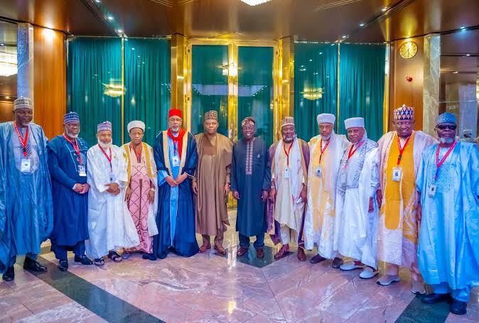
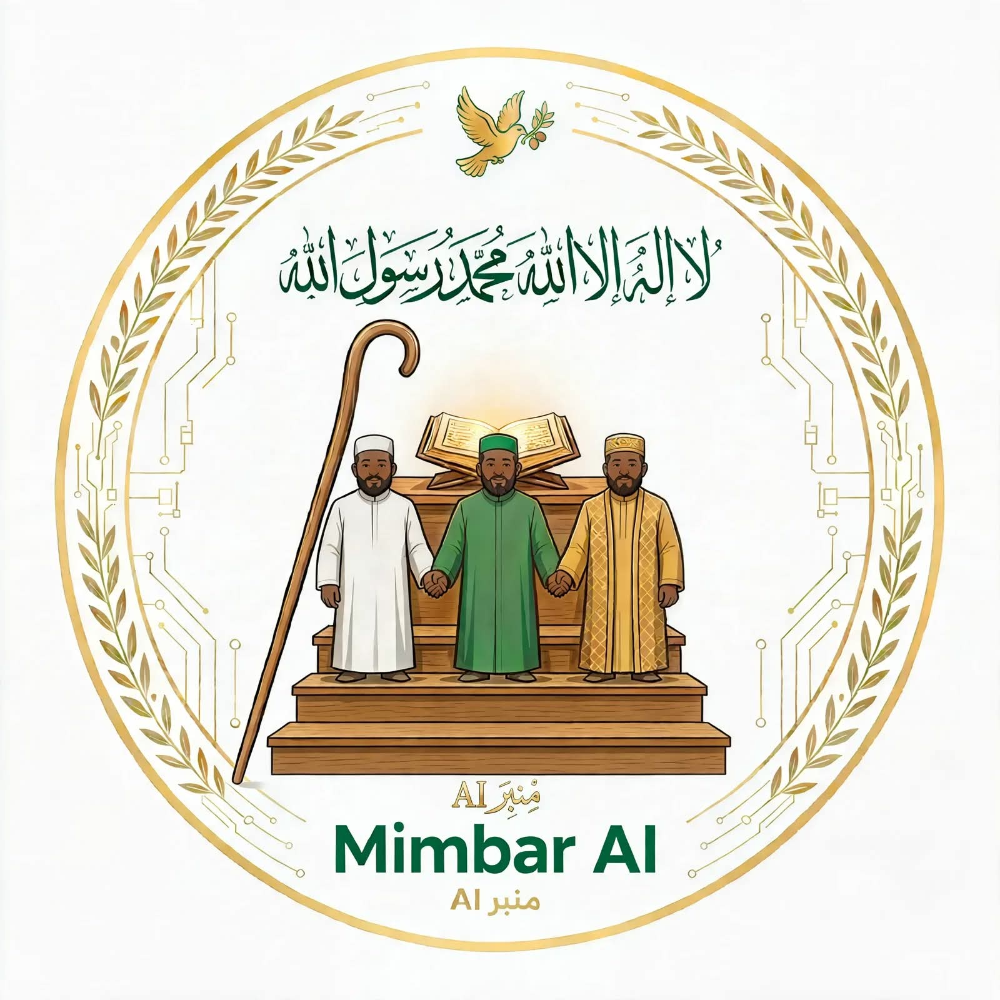

MINBAR-AI HUB

Archiving, Moderating, Translating, Monetizing & Amplifying Islamic Sermons Across Social Media for Peacebuilding, Indigenous Language Promotion, Arabic Literacy & Wealth Creation in North Central Nigeria.
Offline Imam, Online Youth: 109M Nigerians online • 36M Facebook • 32M TikTok • 67% extremist recruitment starts online. We equip VERIFIED Imams to transform online spaces and earn.
Led by: Fadilatul Sheikh Abubakar Yusuf • Dept. of Arabic Studies, Faculty of Arts, Federal University Lokoja
Try Mimbar AI →📅 Book an Imam →Imam Certification →● CHECKING AI CONNECTION...
Ask anything about Islam. Powered by Gemini. Sect-sensitive, with Adab — no takfir, no insult. Answers with Quran / Hadith references.
Need a verified answer from a scholar? Ask Imam - N500 →
Book a Verified Imam for Nikah, Janaza, Aqeeqa, Maulid, Mirath, House Prayer, Community Prayer & more. Fill the form — it will open WhatsApp to Fadilatul Sheikh Abubakar Yusuf automatically. No typing needed.
Ask a verified scholar — Multi-Sect Mufti Panel. Highest respect, no takfir, no insult. For Fiqh, family, marriage, business, worship & more.
Scholar: Fadilatul Sheikh Abubakar Yusuf • Dept. of Arabic Studies, Federal University Lokoja
✉️ Ask by EmailWe link all sects with respect — learn, don't fight. Vetted by Multi-Sect Council.
📖 Quran.com — Quran with translation
📚 Sunnah.com — Hadith
📖 AlTafsir.com — Tafsir Jalalain / Ibn Kathir
📚 Free Fiqh / Tafsir — vetted archive inside MINBAR-AI
• IslamWeb.net • IslamQA.info • SunnahOnline • Izala Library & Tafsir
• Tijaniyya Library • Qadiriyya Texts • Seerah / Mawlid Books • Dhikr & Adab Collections
• Al-Islam.org • Shia Hadith & Tafsir Library
• Internet Archive Islamic Books • Open Islamic Library • Federal University Lokoja Library • talentoutreach.org • eyesnetwork.org
| Level | Fee |
|---|---|
| Basic — IT + Arabic Teacher | N3,000 |
| Mid — IT + Arabic Teacher | N5,000 |
| Advanced | N10,000 |